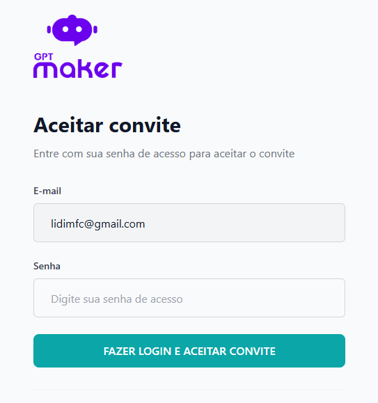
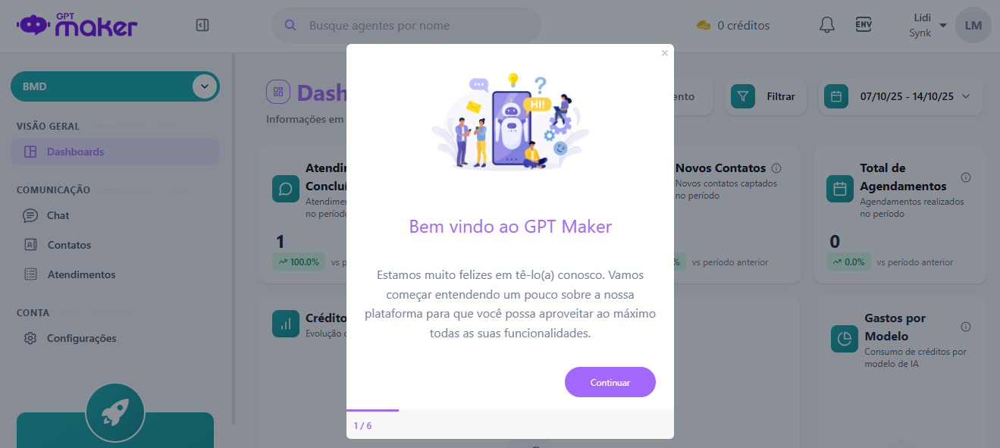
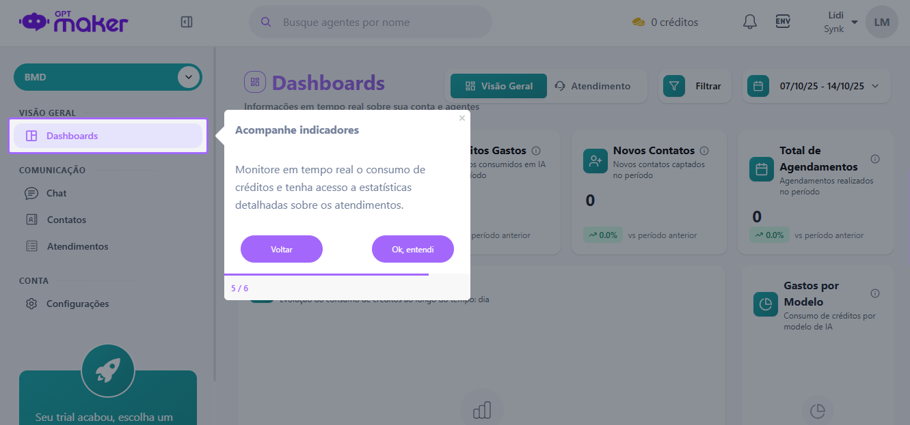

Projeto Agente BêMD
Uma solução inovadora que transformará a forma como a Clínica BMD interage com os pacientes, proporcionando um atendimento mais eficiente, humano e de qualidade.
Apresentação do Projeto
Uma Mensagem da Synk
É com grande entusiasmo que a Synk dá as boas-vindas à equipe da Clínica BMD. Estamos animados para apresentar o Agente BêMD, alimentado pela plataforma GPTMaker. Nosso objetivo é apoiar a Clínica BMD na implementação desta tecnologia, aprimorando a experiência dos pacientes e garantindo que cada interação seja marcada pelo cuidado e pela precisão.
Recursos e Funcionalidades
Integração Humano-IA
Permite uma transição suave da conversa com o agente para um atendente humano, criando uma solução híbrida e eficiente.
Compreensão Contextual
Os agentes não se limitam a fluxos predefinidos, conseguindo adaptar a conversa às necessidades específicas do usuário.
Personalização de Comportamento
A identidade e o tom de voz do agente são 100% personalizáveis, permitindo alinhar a experiência com a marca do cliente.
Conectividade e Automação
A capacidade de se conectar via APIs e Webhooks permite que os agentes conversem com backends customizados e outras ferramentas.
Suporte 24/7
Fornece suporte contínuo, respondendo a perguntas frequentes e resolvendo problemas comuns a qualquer hora do dia.
Otimização de Vendas
Atua como um SDR (Sales Development Representative) virtual, qualificando leads e agendando apresentações de vendas.
Análise de Qualidade (QA)
Sumário Executivo
Os testes demonstram que o Agente BêMD cumpre suas funções principais de forma adequada, fornecendo informações sobre exames, preparos e horários, além de transferir para atendimento humano quando necessário. Nenhuma ação crítica que bloqueie a entrega foi identificada. O agente é funcional.
Resultado Geral
APROVADO
O desempenho geral foi considerado satisfatório. O agente segue a personalidade definida, executa as tarefas esperadas, evita as que não deveria e transfere para humanos corretamente.
Ponto Crítico de Melhoria
REPROVADO
O Teste 9 (Consistência) foi reprovado. O agente deu duas informações contraditórias sobre o preparo para Raio-X. É crucial revisar a base de conhecimento para garantir uma única e correta informação.
Melhorias Recomendadas
- Aprimoramento Futuro: Avaliar a possibilidade de refinar o prompt do BêMD para que ele junte informações em menos mensagens.
- Atualização de Informações: Manter as informações sobre exames e preços sempre atualizadas.
- Feedback do Usuário: Implementar um sistema de feedback para que os usuários possam avaliar suas interações com o BêMD.
- Treinamento Contínuo: Implementar um programa de treinamento regular para o Agente BêMD.
Guia de Onboarding para a Equipe BMD
1. O Convite
Cada membro da equipe receberá um convite por e-mail para se cadastrar na plataforma GPTMaker. Basta clicar em "Aceitar convite".

2. Aceitando o Convite
Na tela seguinte, basta inserir sua senha de acesso para confirmar e entrar na plataforma.
3. Boas-Vindas à Plataforma
Ao fazer o primeiro login, você verá uma tela de boas-vindas com um tour rápido pelas funcionalidades.
4. Painel de Controle (Dashboard)
Este é o seu painel principal, onde você pode acompanhar indicadores, consumo de créditos e estatísticas detalhadas dos atendimentos.
5. Iniciando um Atendimento
Você também pode iniciar uma conversa proativamente com um cliente. Basta ir em "Chat", clicar em "Iniciar atendimento", inserir o número e selecionar o agente BêMD.

6. Monitoramento para Gestores (Recurso Bônus)
A plataforma permite gerar um link de compartilhamento seguro para que gestores, como a Silvia, possam acompanhar os atendimentos em tempo real sem precisar de login, garantindo total transparência e controle de qualidade.